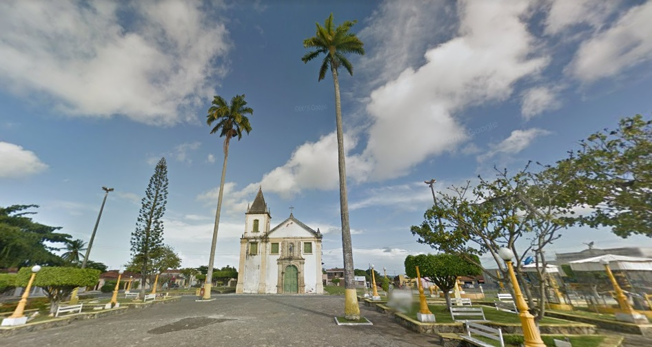

Santo Amaro das Brotas
História
A região, onde se desenvolveu o povoado, vai da Baia de Todos os Santos até o Rio São Francisco.
Os primitivos habitantes da localidade, ocupada por Manoel Pereira, foram os índios tupinambás. Em 1697, Antonio Martins de Azevedo, proprietário de um engenho de açúcar, doou parte de sua fazenda ao patrimônio do povoado, sendo ali edificada a ermida de Nossa Senhora das Brotas. Na mesma época, o povoado foi elevado a Vila. Em 1783, o Arcebispo D. Antonio Correia Freire, estabeleceu a Freguesia. A categoria de Cidade foi atingida em 1938.
Pela Lei de 19 de fevereiro foi extinta a Vila Tomar e anexada à Vila de Itabaianinha. Pela Lei Estadual nº 525-A, de 25 de novembro de 1953 foi criado o novo município com o nome de Tomar do Geru passando à categoria de cidade, sendo o seu território desmembrado do Município de Itabaianinha.
fonte: https://www.santoamarodasbrotas.se.gov.br/Dados Gerais de acordo com o IBGE
| Prefeito (a) | Paulo César Oliviera Souza |
| Vice-Prefeito (a) | Lizia |
| Site do município | https://www.santoamarodasbrotas.se.gov.br/ |
| Área territorial | 236,965 km² |
| População estimada | 12.200 pessoas |
| Densidade demográfica | 48,73 hab/km² |
| IDHM | 0,637 |
| PIB per capita | R$ 11.232,42 |